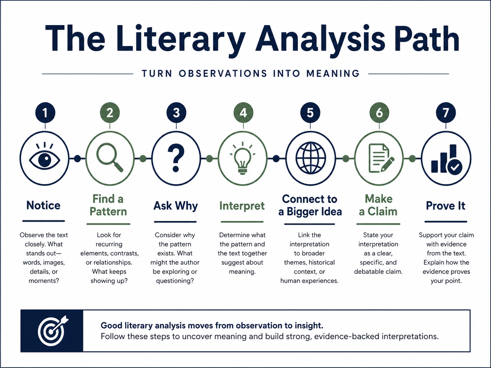
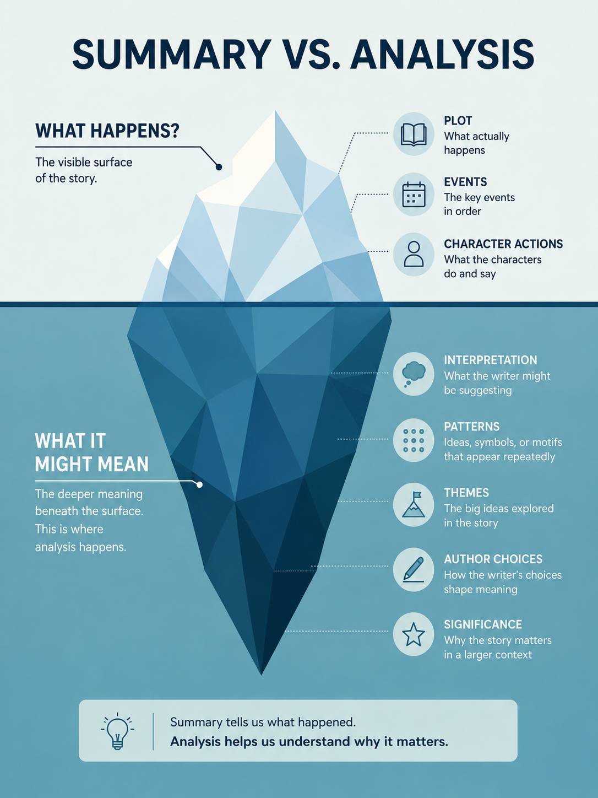

Literary analysis means looking closely at a text, noticing how it works, and explaining what those choices might mean.
In the simplest terms:
Literary analysis is making a thoughtful claim about a text and showing your reader why that claim makes sense.
You Can Break It Into Four Moves
1
Notice
See what the text is doing.
Pay attention to a word, image, pattern, contrast, shift, action, point of view, or other detail that seems important or surprising.
2
Interpret
Ask what the pattern might mean.
Move beyond “I noticed this” and ask: Why might this matter? What idea does it suggest? What reading of the text becomes possible?
3
Support
Use evidence and explain it.
Point to specific language or moments in the text and explain how they support your interpretation.
4
Develop
Build and complicate the argument.
Connect ideas, strengthen the claim, account for evidence that does not fit perfectly, and show why the interpretation matters.
Once you can see the difference between summary and analysis, this longer path shows how an observation can grow into a supported interpretation.

A visual roadmap from noticing a detail to making and supporting an interpretive claim.Text Version of This Graphic
The Literary Analysis Path
Turn Observations Into Meaning
Notice: Observe the text closely. What stands out—words, images, details, or moments?
Find a Pattern: Look for recurring elements, contrasts, or relationships. What keeps showing up?
Ask Why: Consider why the pattern exists. What might the author be exploring or questioning?
Interpret: Determine what the pattern and the text together suggest about meaning.
Connect to a Bigger Idea: Link the interpretation to broader themes, historical context, or human experiences.
Make a Claim: State your interpretation as a clear, specific, and debatable claim.
Prove It: Support your claim with evidence from the text. Explain how the evidence proves your point.
Good literary analysis moves from observation to insight. Follow these steps to uncover meaning and build strong, evidence-backed interpretations.
A Tiny Example
Imagine a story includes this line:
“Mara folds the unopened note twice and places it beneath her cup before Eli enters.”
1. Notice:
The note is still unopened, but Mara hides it before Eli arrives.
2. Interpret:
Maybe the note already feels dangerous or threatening to Mara even before she knows what it says.
3. Support:
The evidence is the contrast between unopened and Mara's deliberate action of folding and hiding it.
4. Develop:
If similar moments happen elsewhere, we might argue that the story presents fear as something created by anticipation, not only by actual knowledge.
What Literary Analysis Is Not
Not just summary: telling what happened is useful only when it helps you make a point.
Not guessing the one hidden answer: more than one interpretation can be reasonable.
Not naming literary devices: saying “this is symbolism” is only the beginning.
Not proving what the author secretly meant: your job is to build a convincing reading from the text.
A useful way to picture the difference is to think of summary as the visible surface of the text and analysis as the thinking that goes beneath it.

Summary tells what happened; analysis explains what the details might mean and why they matter.Read the full text version of this infographic
Summary vs. Analysis
What Happens? The visible surface of the story.
Plot: What actually happens.
Events: The key events in order.
Character Actions: What the characters do and say.
What It Might Mean: The deeper meaning beneath the surface. This is where analysis happens.
Interpretation: What the writer might be suggesting.
Patterns: Ideas, symbols, or motifs that appear repeatedly.
Themes: The big ideas explored in the story.
Author Choices: How the writer’s choices shape meaning.
Significance: Why the story matters in a larger context.
Summary tells us what happened. Analysis helps us understand why it matters.
If You Get Stuck
You do not need to do all four moves at once. Figure out where you are stuck and practice that one move.
 ENGL C1002 Learning Lab
ENGL C1002 Learning Lab